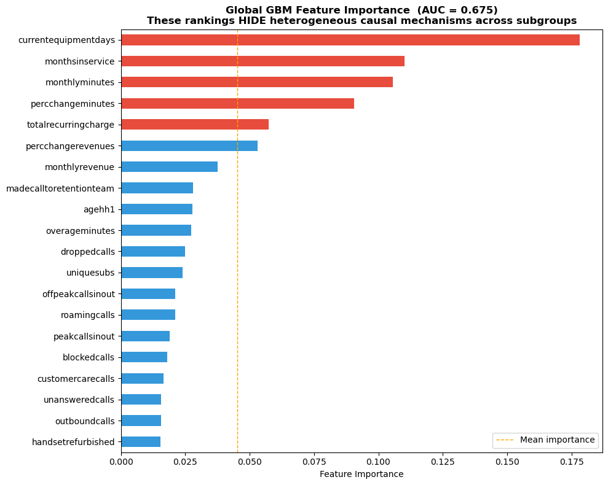
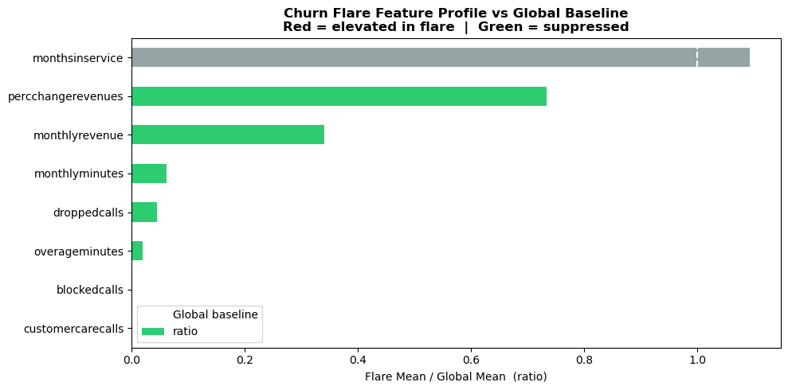
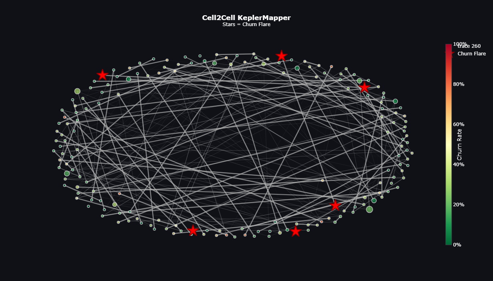
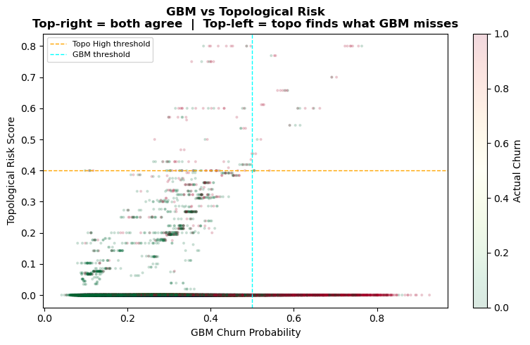
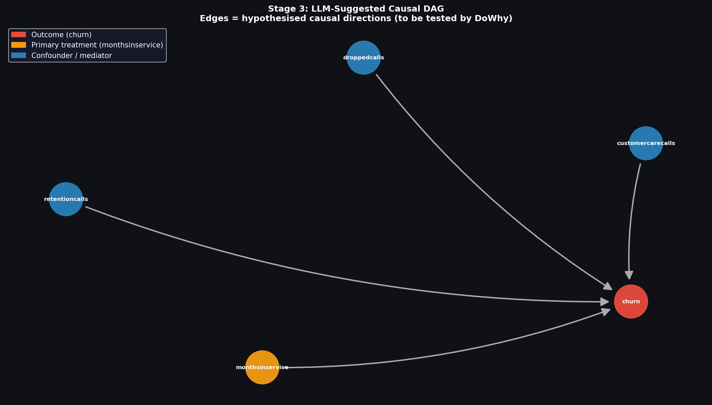
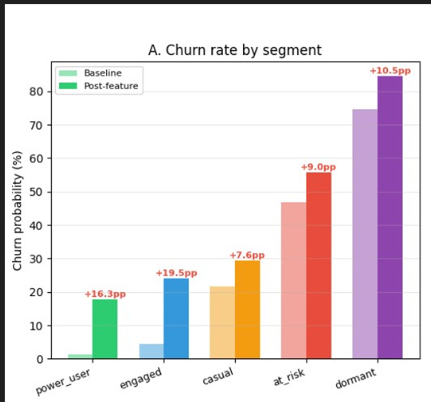
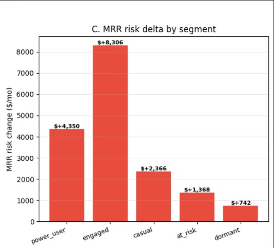
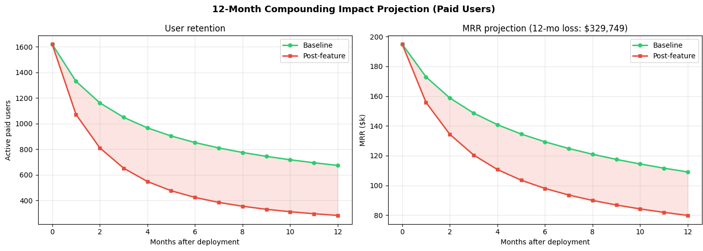

AI system for deep churn analysis and insights
plot shows the global feature importance from the Gradient Boosting Model used for churn prediction, indicating which variables contribute most to the model’s decisions currentequipmentdays, monthsinservice, and monthlyminutes appear most influential, but global rankings may hide different causal patterns across specific customer subgroups.

01chart compares the average feature values during a churn flare to the overall global baseline using a ratio (flare mean / global mean). Features shown in green are suppressed during the flare, while monthsinservice is slightly elevated, suggesting customer tenure becomes more prominent during churn spikes.

02KeplerMapper network visualization represents clusters of customers based on similar behavioral and usage patterns in the dataset. The red stars mark churn flare clusters, highlighting regions in the customer network where churn rates are significantly higher than average.

03This scatter plot compares GBM churn probability with the topological risk score for each customer. The quadrants show where both models agree on high risk (top-right) and where topological analysis identifies risky customers that the GBM model may miss (top-left).

04This causal DAG generated using an LLM illustrates the assumed cause–effect relationships between customer features and churn. The arrows represent potential causal influences, showing how factors like monthsinservice, droppedcalls, monthlyrevenue, and percchangeminutes may contribute to the churn outcome.

05chart compares baseline churn rates with post-feature churn rates across different customer segments. It shows that churn probability increases across all segments, with the largest relative rise observed among engaged and power users.

06bar chart shows the change in Monthly Recurring Revenue (MRR) risk across different customer segments. It highlights that engaged and power users contribute the highest potential revenue loss if they churn, making them key targets for retention strategies.

07This chart is wider than the others, so we limit its height to match the text column while letting it scale naturally in width.

08